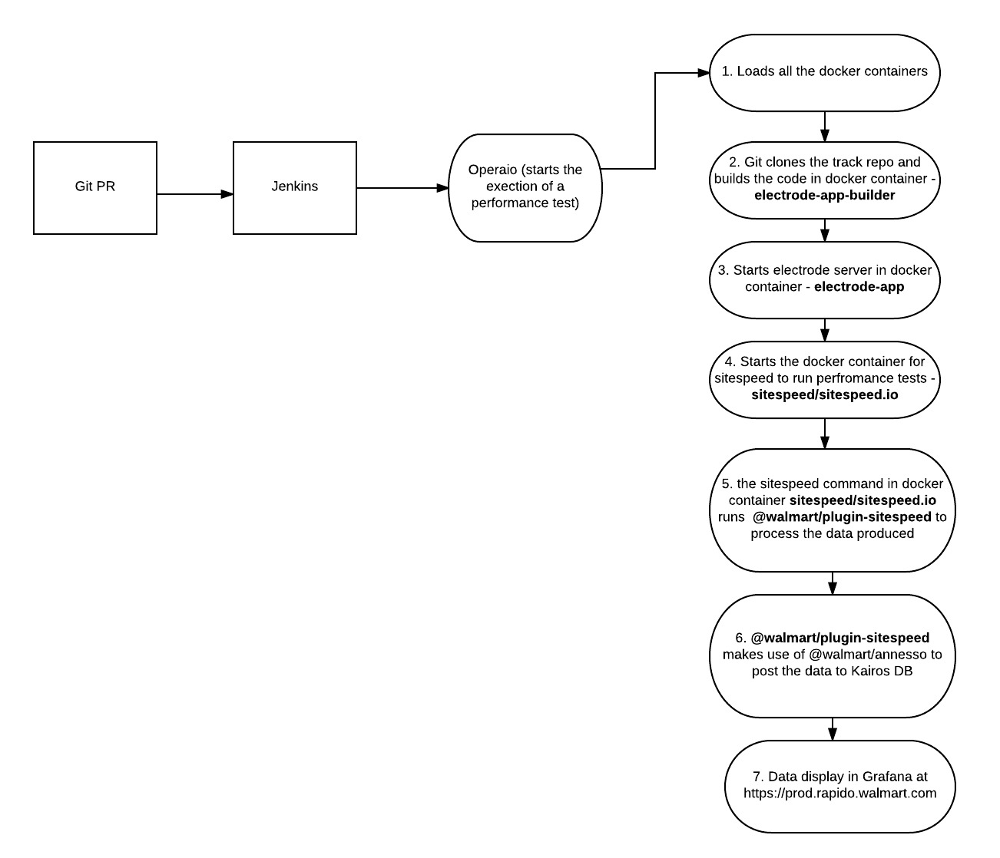

You are welcome to contribute to our repo. Our main repos are :
Below is the architecture of how the components of rapido interact with each other:

. A Jenkins job is triggered by a change in the application’s repository :
npm install;
1. Application is built via command provided by app team. As an example NODE_ENV=production npm run build;
1. Result is made available to specified volume;
1. A Docker container is started from an otto-mock-server image, where the mock server is started via npm run mock-server;
1. A Docker container is started from an electrode-app image, where:
1. Environment variables tell the application to run optimized code against mocked services, example:NODE_ENV=productionNODE_APP_INSTANCE=mock
1. The host dev.walmart.com is mapped to otto-mock-server’s IP;
1. Application is started command provided by app team. As an example, node server/index.js or npm run start
1. A Docker container is started from a sitespeed.io image, which uses Chrome browser to measure performance from the electrode-app container;
1. The collected metrics are forwared to a KairosDB cluster, which is backed by a Cassandra cluster;
1. The collected HAR files are stored into the Cassandra cluster;
1. The sitespeed.io container stops and cleans up;
1. Other containers are stopped and cleaned-up:Operaio (https://gecgithub01.walmart.com/rapido/operaio) - This is the runner of the performance tests. It basically starts all the docker containers : electrode-app-builder, electrode-app, otto-mock-server and sitespeed.io to run the performance tests and deliver the test resuls to the kairos db. If you need to change the way process runs, please contribute to this project.
Plugin-sitespeed (https://gecgithub01.walmart.com/rapido/plugin-sitespeed) - This is the module which captures the data from sitespeed.io and passes it along to annesso module to transform the data and publish it to the Kairos db
Annsesso (https://gecgithub01.walmart.com/rapido/annesso) - This is the module which transforms the sitespeed results data and does a POST to Kairos db to publish the data.
Contributors are encouraged to make changes and write test cases for any new functionality introduced.